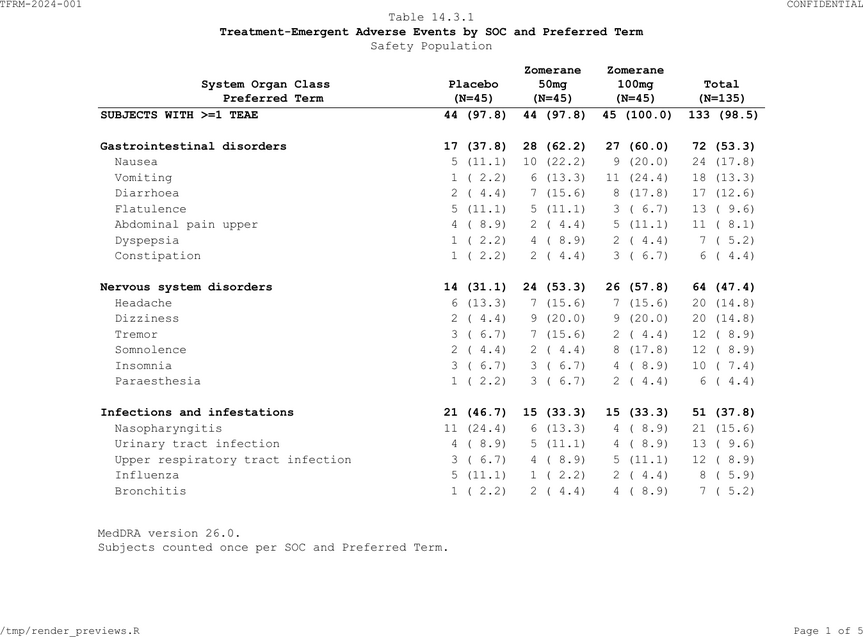

Production table programs for study TFRM-2024-001 using built-in datasets. Every table follows ICH E3 numbering.
Study setup
Real programs don’t repeat settings in every table. Define shared
formatting once at the top of your study program (or in
_tlframe.yml):
# ── Study-wide theme (set once, inherited by all tables) ──
fr_theme(
font_size = 9,
font_family = "Courier New",
orientation = "landscape",
hlines = "header",
header = list(bold = TRUE, align = "center"),
n_format = "{label}\n(N={n})",
footnote_separator = FALSE,
pagehead = list(left = "TFRM-2024-001", right = "CONFIDENTIAL"),
pagefoot = list(left = "{program}",
right = "Page {thepage} of {total_pages}")
)Every table below inherits these settings automatically. Individual tables only specify what is unique to them: data, titles, columns, footnotes, and table-specific row logic.
Principle: If you’re writing the same verb in two tables, it belongs in the theme or a recipe — not in the table program.
N-counts
Define N-counts once per population. Reuse the same vector in every table that shares that population:
14.1.1 Demographics
demog_spec <- tbl_demog |>
fr_table() |>
fr_titles(
"Table 14.1.1",
"Demographics and Baseline Characteristics",
"Intent-to-Treat Population"
) |>
fr_cols(
.width = "fit",
characteristic = fr_col("", width = 2.5),
placebo = fr_col("Placebo", align = "decimal"),
zom_50mg = fr_col("Zomerane 50mg", align = "decimal"),
zom_100mg = fr_col("Zomerane 100mg", align = "decimal"),
total = fr_col("Total", align = "decimal"),
group = fr_col(visible = FALSE),
.n = n_itt
) |>
fr_rows(group_by = "group", blank_after = "group") |>
fr_footnotes(
"Percentages based on number of subjects per treatment group.",
"MMSE = Mini-Mental State Examination."
)
fr_validate(demog_spec)Note what is not here: fr_header(),
fr_hlines(), fr_pagehead(),
fr_pagefoot(), .n_format,
.separator — all inherited from the theme.
demog_spec |> fr_render("output/Table_14_1_1.rtf")
Demographics table (PDF output)
14.1.2 Demographics with group_label
When group variable names and statistic values are in separate
columns, group_label auto-injects group headers into the
display column:
# ── Sample data: long-form demographics ──
demog_long <- data.frame(
variable = c(
"Sex", "Sex",
"Age (years)", "Age (years)", "Age (years)", "Age (years)",
"Race", "Race", "Race"
),
statistic = c(
"Female", "Male",
"Mean (SD)", "Median", "Min, Max", "n",
"White", "Black or African American", "Asian"
),
placebo = c(
"18 (40.0)", "27 (60.0)",
"67.8 (6.9)", "68.0", "52, 84", "45",
"38 (84.4)", "5 (11.1)", "2 (4.4)"
),
zom_50mg = c(
"21 (46.7)", "24 (53.3)",
"68.2 (7.1)", "69.0", "54, 82", "45",
"36 (80.0)", "6 (13.3)", "3 (6.7)"
),
zom_100mg = c(
"20 (44.4)", "25 (55.6)",
"68.0 (7.3)", "67.0", "53, 83", "45",
"37 (82.2)", "4 (8.9)", "4 (8.9)"
),
stringsAsFactors = FALSE
)
demog_gl_spec <- demog_long |>
fr_table() |>
fr_titles(
"Table 14.1.2",
"Demographics by Category (Long-Form Layout)",
"Intent-to-Treat Population"
) |>
fr_cols(
.width = "fit",
variable = fr_col(visible = FALSE),
statistic = fr_col("", width = 2.5),
placebo = fr_col("Placebo", align = "decimal"),
zom_50mg = fr_col("Zomerane 50mg", align = "decimal"),
zom_100mg = fr_col("Zomerane 100mg", align = "decimal"),
.n = c(placebo = 45, zom_50mg = 45, zom_100mg = 45)
) |>
fr_rows(
group_by = "variable",
group_label = "statistic",
indent_by = "statistic"
) |>
fr_footnotes("Percentages based on N per treatment arm.")
fr_validate(demog_gl_spec)group_label = "statistic" injects "Sex",
"Age (years)", and "Race" as header rows in
the statistic column. indent_by indents the detail rows
underneath. Style the headers via fr_styles() if you want
bold.
14.1.4 Subject Disposition
disp_spec <- tbl_disp |>
fr_table() |>
fr_titles(
"Table 14.1.4",
list("Subject Disposition", bold = TRUE),
"All Randomized Subjects"
) |>
fr_cols(
category = fr_col("", width = 2.5),
placebo = fr_col("Placebo", align = "decimal"),
zom_50mg = fr_col("Zomerane 50mg", align = "decimal"),
zom_100mg = fr_col("Zomerane 100mg", align = "decimal"),
total = fr_col("Total", align = "decimal"),
.n = n_itt
) |>
fr_footnotes("Percentages based on number of subjects randomized per arm.")
fr_validate(disp_spec)14.3.1 AE by SOC/PT
Multi-page table with continuation text, SOC/PT indentation, and content-based row styling:
ae_soc_spec <- tbl_ae_soc |>
fr_table() |>
fr_titles(
"Table 14.3.1",
list("Treatment-Emergent Adverse Events by SOC and Preferred Term",
bold = TRUE),
"Safety Population"
) |>
fr_page(continuation = "(continued)") |>
fr_cols(
soc = fr_col(visible = FALSE),
pt = fr_col("System Organ Class\n Preferred Term", width = 3.5),
row_type = fr_col(visible = FALSE),
placebo = fr_col("Placebo", align = "decimal"),
zom_50mg = fr_col("Zomerane\n50mg", align = "decimal"),
zom_100mg = fr_col("Zomerane\n100mg", align = "decimal"),
total = fr_col("Total", align = "decimal"),
.n = n_safety
) |>
fr_rows(group_by = "soc", indent_by = "pt") |>
fr_styles(
fr_row_style(
rows = fr_rows_matches("row_type", value = "total"), bold = TRUE),
fr_row_style(
rows = fr_rows_matches("row_type", value = "soc"), bold = TRUE)
) |>
fr_footnotes(
"MedDRA version 26.0.",
"Subjects counted once per SOC and Preferred Term.",
"Sorted by descending total incidence."
)
fr_validate(ae_soc_spec)Only fr_page(continuation = "(continued)") is added here
because continuation text is specific to this multi-page table.

AE by SOC/PT table (PDF output, page 1)
14.3.2 AE by SOC / HLT / PT (Three-Level Hierarchy)
Multi-level indent_by with a key column that drives
indent depth:
# ── Sample data: three-level AE hierarchy ──
ae_3level <- data.frame(
soc = c(
rep("Gastrointestinal disorders", 5),
rep("Nervous system disorders", 4)
),
term = c(
"Gastrointestinal disorders", "GI signs and symptoms",
"Nausea", "Vomiting", "Diarrhoea",
"Nervous system disorders", "Headaches",
"Headache", "Migraine"
),
row_type = c(
"soc", "hlt", "pt", "pt", "pt",
"soc", "hlt", "pt", "pt"
),
placebo = c(
"28 (62.2)", "20 (44.4)", "12 (26.7)", "5 (11.1)", "3 (6.7)",
"18 (40.0)", "14 (31.1)", "10 (22.2)", "4 (8.9)"
),
zom_100mg = c(
"32 (71.1)", "24 (53.3)", "14 (31.1)", "6 (13.3)", "4 (8.9)",
"22 (48.9)", "16 (35.6)", "12 (26.7)", "4 (8.9)"
),
stringsAsFactors = FALSE
)
ae_3level_spec <- ae_3level |>
fr_table() |>
fr_titles(
"Table 14.3.2",
"TEAEs by SOC, HLT, and Preferred Term",
"Safety Population"
) |>
fr_cols(
soc = fr_col(visible = FALSE),
row_type = fr_col(visible = FALSE),
term = fr_col("SOC / HLT / Preferred Term", width = 3.5),
placebo = fr_col("Placebo\n(N=45)", align = "decimal"),
zom_100mg = fr_col("Zomerane 100mg\n(N=45)", align = "decimal")
) |>
fr_rows(
group_by = "soc",
indent_by = list(
key = "row_type",
col = "term",
levels = c(soc = 0, hlt = 1, pt = 2)
)
) |>
fr_styles(
fr_row_style(
rows = fr_rows_matches("row_type", value = "soc"), bold = TRUE
)
) |>
fr_footnotes(
"MedDRA version 26.0.",
"Subjects counted once per SOC, HLT, and Preferred Term."
)
fr_validate(ae_3level_spec)
#> Warning: ! 1 validation issue found:
#> • `indent_by` column not found in data: c(soc = 0, hlt = 1, pt = 2).The levels vector maps row_type values to
indent depth: SOC = 0 (flush left), HLT = 1 level, PT = 2 levels.
14.2.1 Time-to-Event
tte_spec <- tbl_tte |>
fr_table() |>
fr_titles(
"Table 14.2.1",
list("Time to Study Withdrawal", bold = TRUE),
"Intent-to-Treat Population"
) |>
fr_cols(
section = fr_col(visible = FALSE),
statistic = fr_col("", width = 3.5),
zom_50mg = fr_col("Zomerane\n50mg", align = "decimal"),
zom_100mg = fr_col("Zomerane\n100mg", align = "decimal"),
placebo = fr_col("Placebo", align = "decimal"),
.n = c(zom_50mg = 45, zom_100mg = 45, placebo = 45)
) |>
fr_rows(group_by = "section", blank_after = "section") |>
fr_styles(
fr_row_style(
rows = fr_rows_matches("statistic", pattern = "^[A-Z]"),
bold = TRUE
)
) |>
fr_footnotes(
"[a] Kaplan-Meier estimate with Greenwood 95% CI.",
"[b] Two-sided log-rank test stratified by age group.",
"[c] Cox proportional hazards model.",
"NE = Not Estimable."
)
fr_validate(tte_spec).n uses a local vector here because the column order
differs from other tables (treatment arms exclude
total).
14.4.1 Concomitant Medications
cm_spec <- tbl_cm |>
fr_table() |>
fr_titles(
"Table 14.4.1",
list("Concomitant Medications by Category and Agent", bold = TRUE),
"Safety Population"
) |>
fr_cols(
category = fr_col(visible = FALSE),
medication = fr_col("Medication Category / Agent", width = 3.0),
row_type = fr_col(visible = FALSE),
placebo = fr_col("Placebo", align = "decimal"),
zom_50mg = fr_col("Zomerane\n50mg", align = "decimal"),
zom_100mg = fr_col("Zomerane\n100mg", align = "decimal"),
total = fr_col("Total", align = "decimal"),
.n = n_safety
) |>
fr_rows(group_by = "category", indent_by = "medication") |>
fr_styles(
fr_row_style(
rows = fr_rows_matches("row_type", value = "total"), bold = TRUE),
fr_row_style(
rows = fr_rows_matches("row_type", value = "category"), bold = TRUE)
) |>
fr_footnotes("Subjects counted once per category and medication.")
fr_validate(cm_spec)14.3.6 Vital Signs with page_by
Multi-parameter table with spanning headers and per-page N-counts:
# Pre-compute per-parameter N-counts from ADVS
vs_n <- aggregate(
USUBJID ~ PARAM + TRTA, data = advs[advs$AVISIT == "Baseline", ],
FUN = function(x) length(unique(x))
)
vs_spec <- tbl_vs[tbl_vs$timepoint == "Week 24", ] |>
fr_table() |>
fr_titles(
"Table 14.3.6",
"Vital Signs --- Week 24 Summary",
"Safety Population"
) |>
fr_cols(
param = fr_col(visible = FALSE),
timepoint = fr_col(visible = FALSE),
statistic = fr_col("Statistic", width = 1.2),
placebo_base = fr_col("Baseline"),
placebo_value = fr_col("Value"),
placebo_chg = fr_col("CFB"),
zom_50mg_base = fr_col("Baseline"),
zom_50mg_value = fr_col("Value"),
zom_50mg_chg = fr_col("CFB"),
zom_100mg_base = fr_col("Baseline"),
zom_100mg_value = fr_col("Value"),
zom_100mg_chg = fr_col("CFB"),
.n = vs_n
) |>
fr_rows(page_by = "param") |>
fr_spans(
"Placebo" = c("placebo_base", "placebo_value", "placebo_chg"),
"Zomerane 50mg" = c("zom_50mg_base", "zom_50mg_value", "zom_50mg_chg"),
"Zomerane 100mg" = c("zom_100mg_base", "zom_100mg_value", "zom_100mg_chg")
) |>
fr_footnotes("CFB = Change from Baseline.")
fr_validate(vs_spec)
#> Warning: ! 1 validation issue found:
#> • Column widths (10.88in) exceed 110% of printable area (9in). Consider
#> `fr_cols(.split = TRUE)` or narrower widths..n takes a 3-column data frame (parameter + treatment +
count) for automatic per-page N-counts when combined with
page_by.
Wide table with column split
When columns exceed the page width, .split = TRUE
creates panels:
wide_spec <- tbl_vs[tbl_vs$timepoint == "Week 24" &
tbl_vs$param == "Systolic BP (mmHg)", ] |>
fr_table() |>
fr_titles("Table 14.3.6", "Systolic BP --- Column Split") |>
fr_cols(
param = fr_col(visible = FALSE),
timepoint = fr_col(visible = FALSE),
statistic = fr_col("Statistic", width = 1.2, stub = TRUE),
placebo_base = fr_col("Placebo\nBaseline", width = 1.0),
placebo_value = fr_col("Placebo\nValue", width = 1.0),
placebo_chg = fr_col("Placebo\nCFB", width = 1.0),
zom_50mg_base = fr_col("Zom 50mg\nBaseline", width = 1.0),
zom_50mg_value = fr_col("Zom 50mg\nValue", width = 1.0),
zom_50mg_chg = fr_col("Zom 50mg\nCFB", width = 1.0),
zom_100mg_base = fr_col("Zom 100mg\nBaseline", width = 1.0),
zom_100mg_value = fr_col("Zom 100mg\nValue", width = 1.0),
zom_100mg_chg = fr_col("Zom 100mg\nCFB", width = 1.0),
.split = TRUE, .width = "fit"
)
fr_validate(wide_spec)What each layer owns
| Setting | Where it belongs | Why |
|---|---|---|
| Font, orientation, margins |
fr_theme() or _tlframe.yml
|
Same for every table |
Header bold/center, .n_format
|
fr_theme() or _tlframe.yml
|
Same for every table |
fr_hlines("header") |
fr_theme() or _tlframe.yml
|
Same for every table |
| Page headers/footers |
fr_theme() or _tlframe.yml
|
Same for every table |
footnote_separator = FALSE |
fr_theme() or _tlframe.yml
|
Same for every table |
| N-count vectors | Named variables (n_itt, n_safety) |
Reused across tables |
| Titles, footnotes | Per-table | Unique to each table |
| Column definitions | Per-table | Unique to each table |
Row logic (group_by, indent_by) |
Per-table | Unique to each table |
| Row styles | Per-table | Unique to each table |
continuation, page_by
|
Per-table | Only some tables need them |